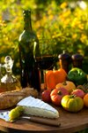
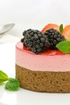

Welcome to Native Cooking of Utah!
Welcome to Native Cooking of Utah. If you enjoy cooking like we do, you should have fun looking around this site. Check out some recipes and also take our survey if you get the chance.
Featured Food Photography




Mini Tribute - Raspberry Cake

Raspberry cake is a popular dessert in Utah. It has soft layers and a fresh raspberry filling. A lot of families have been making it for years and it is still a favorite today.